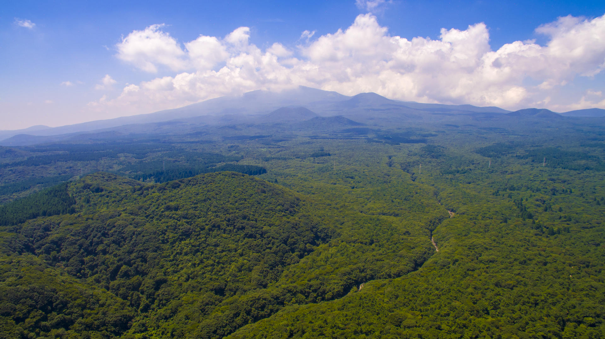

아차산 생태공원 코스
쉬움
2.1km
총 1시간 10분
추천 이유 · 짧은 거리에 오르막이 완만해요
산 이름이나 코스를 검색하거나, 난이도로 추천받아 보세요.
등산 정보는 대부분 경험자 기준이라 처음엔 어렵게 느껴져요. SanTa는 거리와 소요시간으로 초보자도 부담 없이 고를 수 있는 코스를 보여드려요.
쉬움, 중간, 어려움 중에 고르면 거리와 시간으로 맞는 코스를 골라줘요.
난이도, 길이, 소요시간, 지형, 지역으로 찾고 통제 코스는 자동으로 빼요.
산 높이와 사진, 위험구간을 확인하고 다녀온 사람들의 후기를 읽어요.
총 소요시간과 거리가 짧은 순서로 골랐어요
추천 이유 · 짧은 거리에 오르막이 완만해요
추천 이유 · 1시간 반이면 다녀올 수 있어요

추천 이유 · 조금 더 올라가고 싶을 때 좋아요
믿을 수 있는 정보
산림청 등산로 데이터와 산정보 OpenAPI를 바탕으로
거리, 시간, 난이도, 산 높이를 보여드려요.
